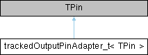

|
Speeduino
|
Loading...
Searching...
No Matches
|
Speeduino
|
An output pin that tracks it's state (HIGH/LOW) More...
#include <trackedOutputPin.h>

Public Member Functions | |
| void | setPin (uint8_t pin, uint8_t mode) noexcept |
| Set the input pin. | |
| bool | isPinHigh (void) const noexcept |
| Check if the pin is set high. | |
| bool | isPinLow (void) const noexcept |
| Check if the pin is set low. | |
| void | setPinHigh (void) noexcept |
| Set the pin high. | |
| void | setPinLow (void) noexcept |
| Set the pin low. | |
An output pin that tracks it's state (HIGH/LOW)
This is impossible to do across all platforms and boards using digitalRead():
INPUT and OUTPUT concurrently
|
inlinenoexcept |
Check if the pin is set high.
|
inlinenoexcept |
Check if the pin is set low.
|
inlinenoexcept |
Set the input pin.
|
inlinenoexcept |
Set the pin high.
|
inlinenoexcept |
Set the pin low.